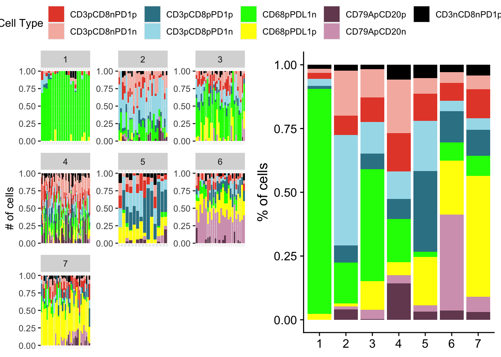

Code
lma <- vroom::vroom("/Users/karanvir/Documents/LMAProject/IROC_TMA/Results/Neighborhood-analysis/7LMAs_15r15n_IROC_TMA.csv")
colnames(lma) <- gsub("CD20p" , "CD79ApCD20p", colnames(lma)) %>%
gsub("^PD1p$", "CD3nCD8nPD1p", .)
getClusterPlots(lma, breaks = c("CD3pCD8nPD1p", "CD3pCD8nPD1n", "CD3pCD8pPD1p", "CD3pCD8pPD1n", "CD68pPDL1n",
"CD68pPDL1p", "CD79ApCD20p", "CD79ApCD20n", "CD3nCD8nPD1p"), cell_type_colors = c("#E64B35FF",
"#f5b8af",
"#358295",
"#a6ddea",
"green",
"yellow",
"#744960",
"#d4a2bc",
"black"))